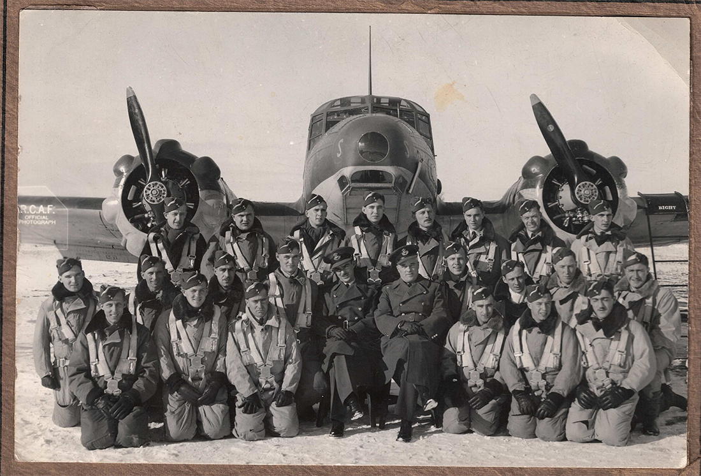
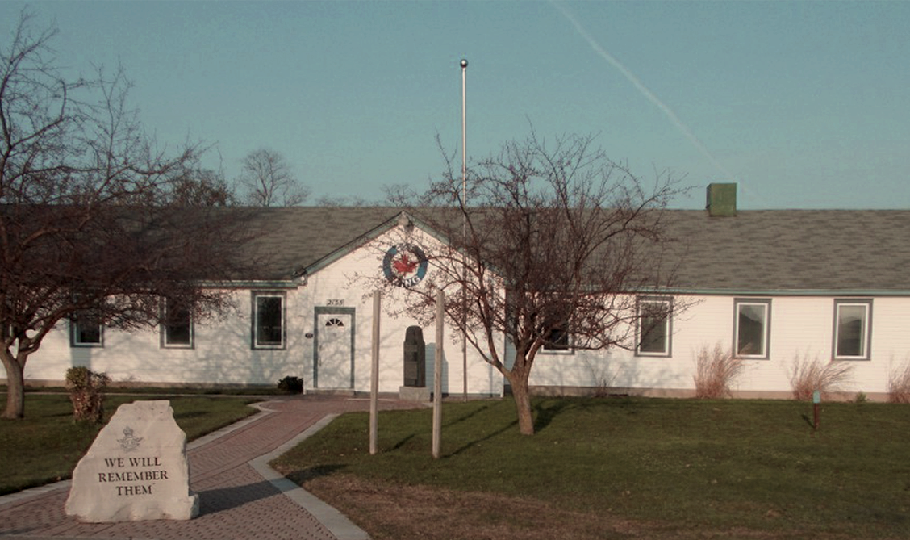

Airman's Canteen Page
This canteen was built during WWII to serve London's RCAF base located here at what was then known as the Crumlin Airport which had just opened in June of 1940. The canteen had a wet and dry side - (alcohol and non-alcohol). It also had a three-chair barbershop and a tuck shop for such things as soft drinks, ice cream, chocolate bars and cigarettes.


During WWII, two aircrew instruction schools operated on the base: #3 Elementary Flying School (1940-42) and #4 Air Observer School (1940-44) which trained navigators and bomb aimers. The air observers (navigators) went on to receive more training in Fingal, east of St. Thomas, at #4 Bombing and Gunnery School.
These schools were part of the British Commonwealth Air Training Plan (BCATP) which trained pilots, air observers, navigators, bomb aimers, gunners, flight engineers, ground crew and wireless operators at over hundred bases across Canada. Most of the trainees were Canadian, though there were others from the Royal Air Force and from the air forces of Australia and New Zealand. Most would serve overseas.

After the war an RCAF Auxiliary unit - 420 Squadron, the Snowy Owls - trained here (1948-56).
This Building Today

A Wing (427) of the RCAF Association bought the building in 1959 and have maintained it since as a club house.
The RCAF Association's main objectives are: to support the present-day RCAF, to memorialize the veterans of the force, and to support the area's several air cadet units. The Wing maintains a museum as a memorial to our veterans, to the airmen and airwomen who trained and served on the base, and to the over 250 Londoners who gave their lives during WWII while serving in the RCAF.
A permanent exhibition on the base can be found in the adjoining ball room.